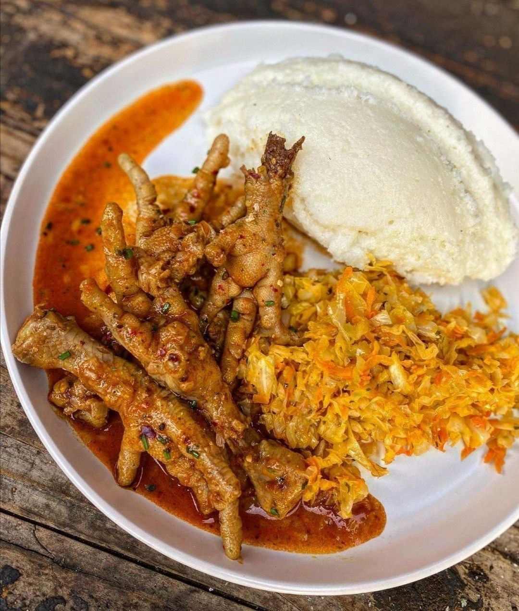
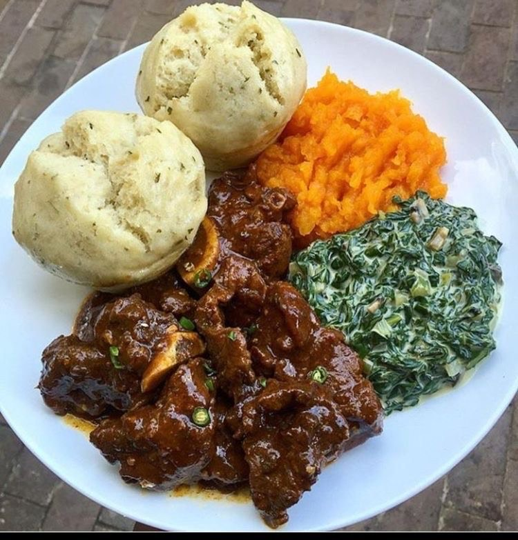
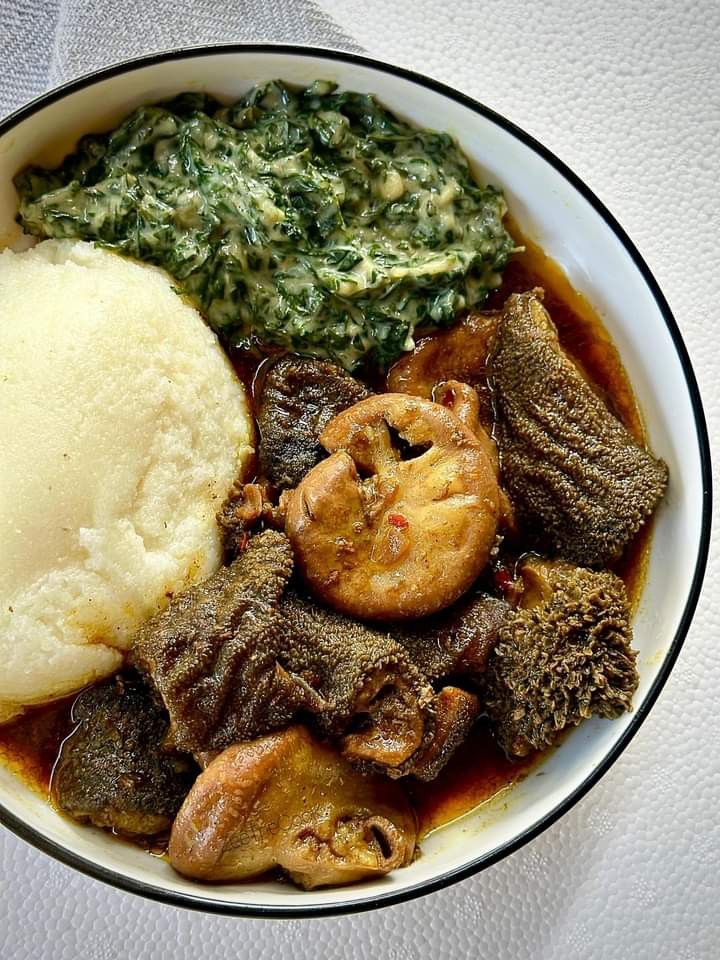
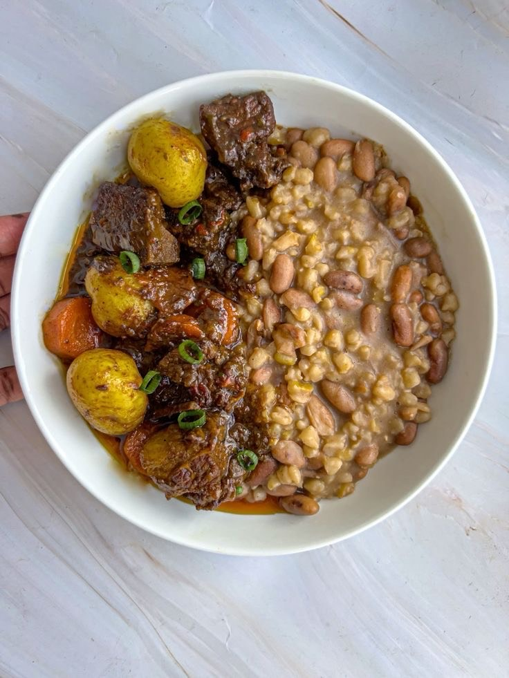

Slow-simmered in a bold, spiced seshebo until every drop of flavour has nowhere left to go and served with soft, hand-rolled pap and buttered cabbage. Go monate.
R50

A rich and hearty beef stew, slow-cooked to perfection and served with a side of dumplings and vegetables. This is what a Sunday afternoon tastes like.
R60

Slow cooked to perfection until incredibly tender and traditionlly prepared as a thick, rich stew, Mogodu is served alongside pap and a vegetable side dish.
R90

Cooked low and slow with baby potatoes and carrots, sitting beside a creamy, soul-filling samp and beans. The kind of bowl Koko would slide across the table without a word because the food says everything.
R80